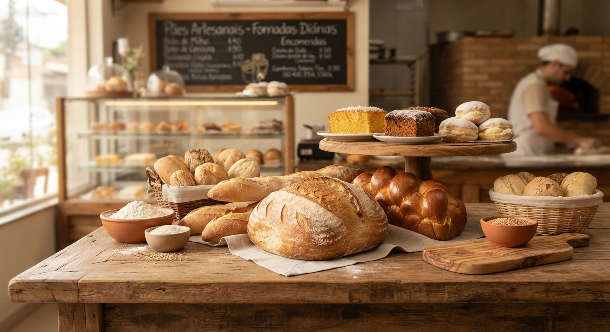

Bem-vindo à Flor de Trigo
Qualidade, ingredientes selecionados e aquele cheirinho de pão assado na hora para acompanhar o dia a dia da sua família.
Sobre Nós

A Padaria Flor de Trigo é uma padaria artesanal focada em oferecer produtos frescos, saborosos e preparados com cuidado para os moradores da região.
Unimos receitas tradicionais e um atendimento acolhedor para tornar cada visita especial.
Nosso Cardápio
| Produto | Descrição | Preço |
|---|---|---|
| Pão Francês | Assado de hora em hora, leve e crocante | R$ 16,90 / kg |
| Pão Italiano | Fermentação natural com casca crocante | R$ 18,00 / un |
| Bolo de Milho | Receita caseira feita com milho fresco | R$ 24,00 / un |
| Bolo de Cenoura | Massa fofinha com cobertura de chocolate | R$ 28,00 / un |
| Sonho de Creme | Recheado com creme de baunilha e açúcar | R$ 7,50 / un |
Horários e Localização
Segunda a Sexta: 06h00 às 20h30
Sábados: 06h30 às 20h00
Domingos e Feriados: 07h00 às 13h00
Endereço: Rua das Acácias, 245 – Guarulhos/SP
Telefone / WhatsApp: (11) 99999-8888
Dúvidas e Encomendas
Preencha os dados abaixo para falar conosco: